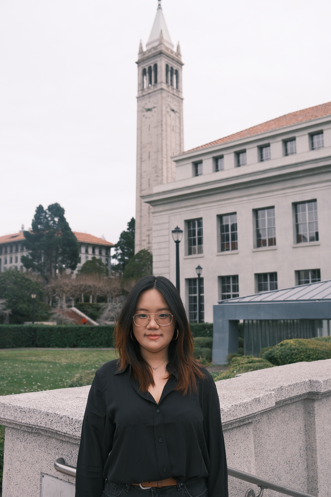
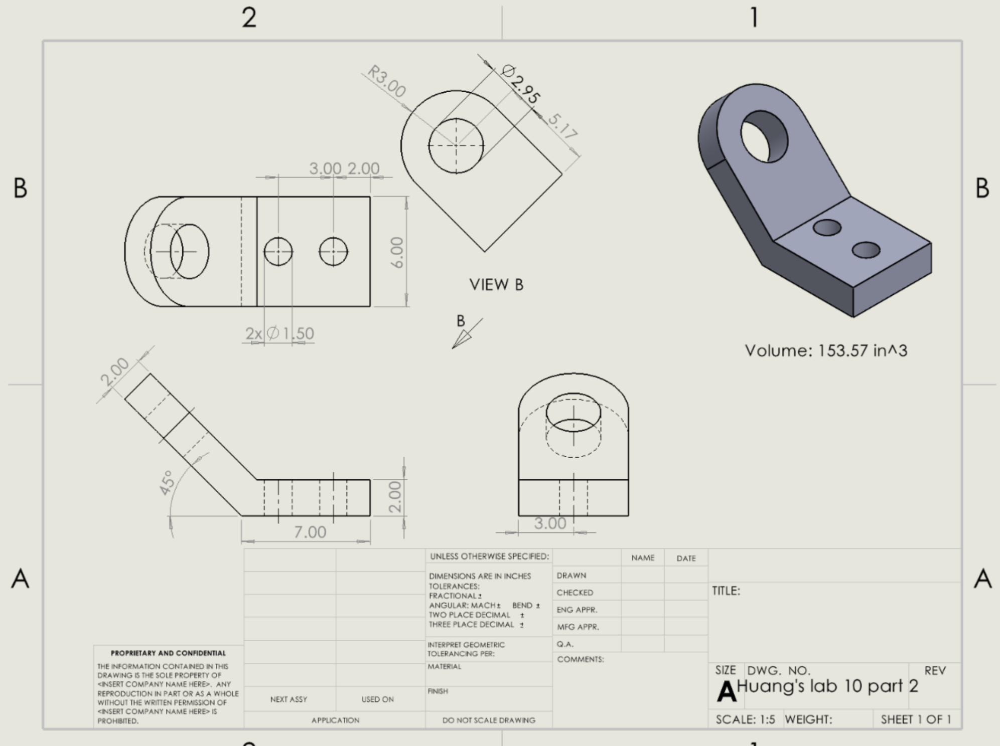
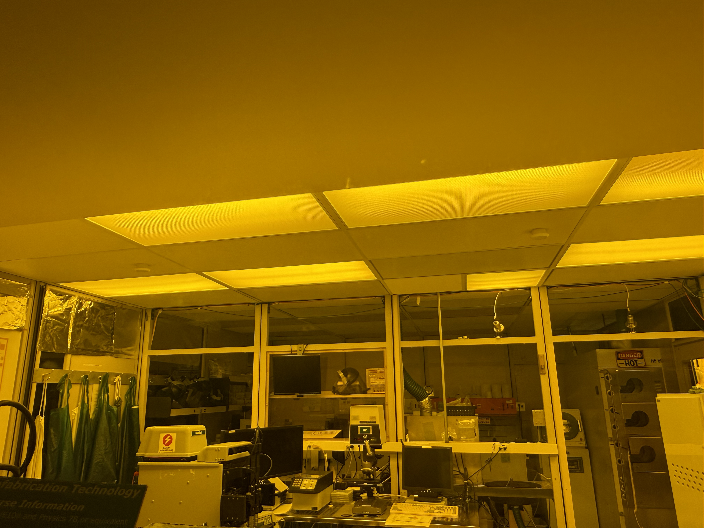

Mechanical & Electrical Engineering, UC Berkeley — Portfolio
Welcome! This page presents an overview of my academic and professional background as a senior Mechanical Engineering student (minoring in Electrical Engineering) at UC Berkeley, with experience in mechanical design, CAD/FEA, materials engineering, robotics, control systems, micro-fabrication processing, and manufacturing. I bring strong analytical and problem-solving skills, along with experience in MATLAB, Python, LabVIEW, Fusion 360, SolidWorks, and experimental research. I am mission-driven, curious, and eager to learn, constantly seeking out new challenges that push me beyond what I already know. I thrive in environments where engineers bring different perspectives, challenge one another, and work together to build something meaningful. Explore my projects and research below to see what I have built, investigated, and learned along the way.
Investigating SARS-CoV-2-containing respiratory droplet residues using X-ray CT microtomography. Built an end-to-end MATLAB pipeline turning raw multi-spectral CT slices into material composition and energy-level data, and performed 3D segmentation of bacterial structures across consecutive slices.
Designing and prototyping a robotic puppet to autonomously perform traditional Indonesian gamelan music. Modeled and CAD'd the puppet hand assembly in Blender to enable precise, controlled striking motion.
Redesigned the steering mount for insufficient stiffness and inaccessibility. Iterated insert geometry across a failed one-hole design, a passing three-hole design, and the final resultant part — cutting weight ~22.5% while holding a safety factor of 1.1 under FEA.
Wearable integrating a MAX30102 PPG sensor, MPU6050 IMU, and LDR sensor, running a multitask FreeRTOS system (100 Hz heart-rate sampling, 50 Hz motion sensing) with a LabVIEW GUI for live visualization of heart rate, SpO₂, and motion metrics.
Studied triply periodic minimal surface (TPMS) lattice geometry for heat exchanger applications, modeling conjugate heat transfer and comparing conduction results against thermal camera imaging.
ESP32 system monitoring fridge temperature, humidity, and door status via DHT11 and photoresistor sensors, logging to Firebase in real time with automated expiration alerts.
Drone-mounted mechanism for aerial seed delivery, designed to reliably meter and release seed payloads for reforestation. Video below shows the completed mechanism in operation.

